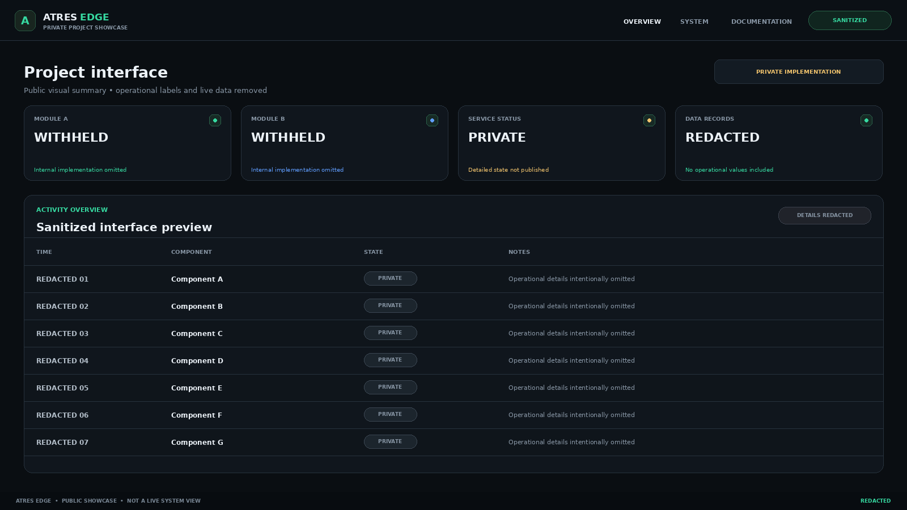
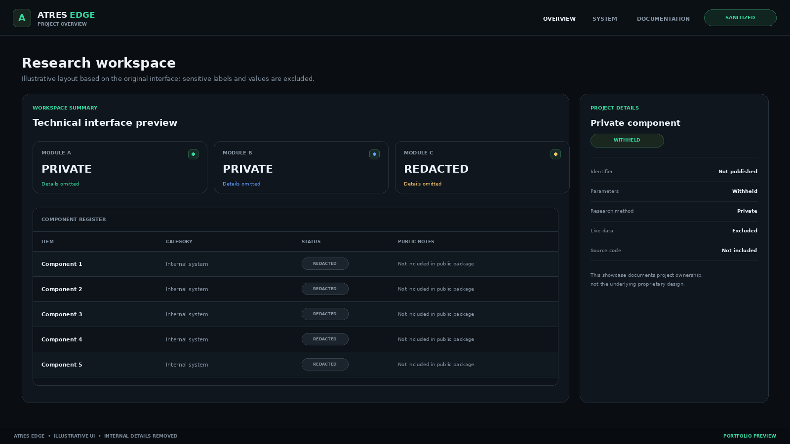

Private engineering project · Public showcase
ATRES Edge Engine
An independently developed research-engineering system built around a custom interface and supporting software components. This public presentation documents the project’s engineering scope and recognition while keeping its underlying concept and implementation private.
SOURCE CODE NOT INCLUDEDRecognition
Årets gymnasiearbete
JENSEN gymnasium Nacka Strand · 2026
Semifinalist — Unga Forskare
2026
Engineering scope
Work represented by this project includes multi-component software development, persistent data handling, Linux service operations, dashboard/interface development, monitoring, troubleshooting, and technical documentation.
Interface previews
Sanitized illustrative visuals. They are not live screenshots and contain no production data.


Public scope
Portfolio summary only. The original research hypothesis, product concept, proprietary methods, algorithms, scoring rules, thresholds, internal schemas, source code, production data, credentials, and deployment details are intentionally excluded. This repository is not a runnable copy of the private system.